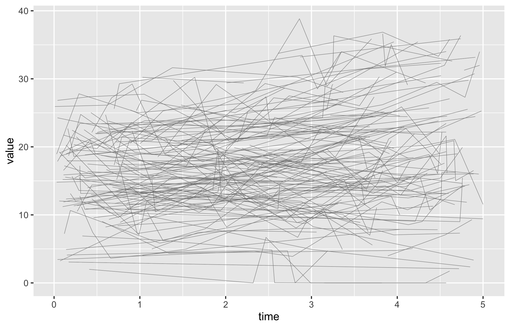
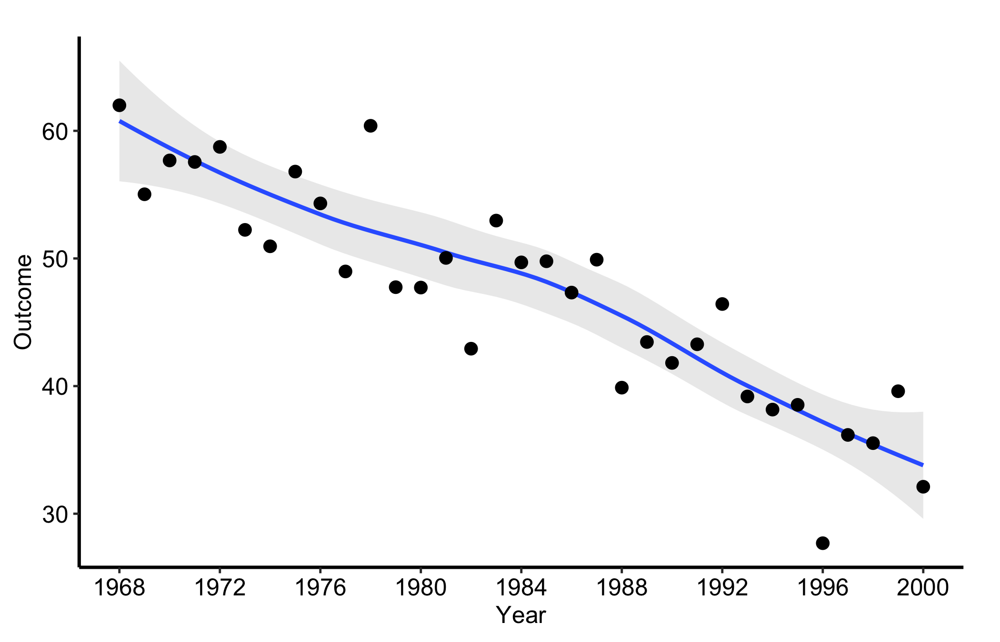

How does each patient change across repeated measurements, and does the cohort-level trend tell the same story? Spaghetti and trend plots answer those two levels of the longitudinal question without pretending they are the same.
13.1 When to use it
You measured the same thing on the same patients more than once, and you want to see how it moves. That is the case for a spaghetti plot. Each patient becomes one line connecting their repeated measurements over time, and the tangle of lines (the “spaghetti” the name promises) gives you the shape of the cohort: where the values cluster, how much individual patients swing, whether the bundle drifts up or down as the years pass. A serial echo measurement (aortic valve gradient, valve area, regurgitation grade) is the natural candidate.
This chapter covers two related displays. The spaghetti plot, hv_spaghetti(), keeps every patient’s trajectory visible, so you see the spread as well as the trend. Its companion, hv_trends(), removes the individual lines, fits a LOESS curve to the raw observations, and overlays one annual summary point per group. Use it when the population-level pattern matters more than tracing individual patients.
Both return a bare ggplot you finish with scales, labels, and a house theme.
13.2 The data it needs
hv_spaghetti() expects long-format data: one row per measurement, with an id column identifying the patient, a time column, and the value being tracked. Optionally, a grouping column lets the smoother compare strata when add_smooth = TRUE. In hvtiPlotR 2.7.10 the individual trajectory layer remains black even when colour_col is set; the group colours apply to the smoother. sample_spaghetti_data() generates 150 patients with up to 6 observations each, split by a named proportion vector that stands in for a sex stratification. Build both the plain and the group-aware objects up front so the variants below can reuse them.
dta_sp <-sample_spaghetti_data(n_patients =150,max_obs =6,groups =c(Female =0.45, Male =0.55),seed =42L)head(dta_sp)
id time value group
1 1 0.44 22.12 Female
2 1 0.67 27.20 Female
3 1 0.91 29.24 Female
4 1 1.29 18.95 Female
5 1 1.96 24.00 Female
6 2 2.04 25.16 Female
hv_trends() works the other way: you hand it patient-level data and it computes the annual summary internally, so you do not pre-aggregate. The year_range and groups arguments set the study window and group structure.
13.3 Inspect it
Both spaghetti objects use the hv_spaghetti plot method. Inspecting their metadata confirms the patient identifier, observation count, and whether a grouping column was retained for the optional smoother before either object is plotted.
Start from the bare spaghetti panel so you can see what the constructor produced before any styling: one thin trajectory per patient over time, no colour, no axis limits, no theme.
p_sp <-plot(sp)p_sp

Now set sensible axis limits and breaks with the usual scale layers, then add a theme. The y-axis here covers the observed range of AV mean gradient without compressing the trajectories into the lower half of the panel.
Figure 13.1: One trajectory per patient for AV mean gradient over five years of follow-up
13.5 Read it
A spaghetti plot is read as a cloud first and individual lines second. Follow-up years are on the x-axis and AV mean gradient is on the y-axis; each line is one patient, so the number of observed trajectories at a time point is the effective denominator. Compare the bundle across time, but do not treat the descriptive paths as a treatment effect or assume that dropout is unrelated to the outcome. Look for:
The shape of the bundle. Where the lines are dense is where most patients sit; where they fan out is where patients diverge. A bundle that drifts upward across the x-axis is a cohort whose measurement is rising over time, even if no single line makes that obvious.
The crossing lines. A patient whose trajectory cuts across the bundle, from the bottom to the top or back, is a patient whose value changed a lot. A few of these are normal; a whole sheaf of steep lines means the measurement is volatile and a single summary will hide more than it shows.
Where the lines stop. Trajectories that end early are patients lost to follow-up. If the lines that drop out tend to sit high or low in the bundle, your later time points are a biased sample of the early cohort, and the apparent trend there may be attrition rather than change.
13.6 Adapt it
13.6.1 Spaghetti, with a LOESS overlay
When the bundle is too dense to read by eye, pass add_smooth = TRUE to overlay a LOESS trend line per group (locally weighted regression, a flexible curve that follows the data without assuming a straight line). The individual trajectories stay as neutral context while the coloured smooths carry the group comparison.
Figure 13.2: Black patient trajectories with coloured group-specific LOESS smoothers carrying the comparison
The smoother is fitted separately within each sex stratum. It summarizes the observed trajectories, not within-patient causal change, and it can move when the mix of patients still under observation changes.
13.6.2 Making the trajectories recede behind the trend
A plain spaghetti plot needs no legend because every line represents the same thing. When you add a LOESS overlay, use the constructor arguments to make the patient trajectories light and thin while the smooth carries the comparison. The caption names both layers, while line weight keeps the trend visually separate without adding a legend to a one-group panel.
Figure 13.3: Patient trajectories in light grey with a wider LOESS trend carrying the cohort-level pattern
This layer comparison is carried by line weight and the caption, not colour alone. The LOESS curve is still a descriptive smoother and cannot distinguish true change from selective follow-up.
13.6.3 Temporal trend: a single annual series
When the per-patient detail stops being the point, hv_trends() replaces the individual trajectories with a smoother plus one summary point per year. Subset to a single group and fit with group_col = NULL for a single series. The points are annual means of the continuous value column, but the LOESS curve is fitted to the raw rows in tr1$data, not to those means. Set the x-axis to the study window and let the y-axis span both layers (here roughly 20 to 70). One detail to watch, called out again in the pitfalls below: setting limits tighter than the data, for instance c(0, 10), silently drops every point and line and leaves a blank panel. The c(0, 80) limits here comfortably contain the series.
Figure 13.4: Annual mean points for one group with a LOESS curve fitted to the underlying raw observations
Year is on the x-axis and the outcome is on the y-axis. Each point is the mean of the observations available in that year. The LOESS curve instead fits all raw observations, so years with more rows can exert more influence than years with fewer rows. Both layers describe the observed series; neither shows that calendar time caused the outcome to change.
13.6.4 Temporal trend: multiple groups
When group_col is set, the constructor computes per-group annual means for the points and plot() fits a raw-observation smoother within each group. Pairing scale_colour_brewer() with scale_shape_manual() gives each group both a distinct colour and a distinct marker, so the figure stays readable when it is printed or photocopied in greyscale.
year value group
Group I.1 1968 62.00167 Group I
Group I.2 1969 55.03000 Group I
Group I.3 1970 57.68000 Group I
Group I.4 1971 57.56000 Group I
Group I.5 1972 58.74167 Group I
Group I.6 1973 52.24000 Group I
Figure 13.5: Annual mean points and raw-observation LOESS curves for four groups, with distinct colours and point shapes
13.6.5 Temporal trend: with a model-based smoother band
Pass se = TRUE to ask geom_smooth() for its model-based uncertainty band around the LOESS fitted to raw observations, and use alpha to control the band’s opacity. This is not a confidence interval for the annual mean points and does not directly display the number of observations available in each year. Show yearly counts separately when that denominator matters.
plot(tr1, se =TRUE, alpha =0.2) +scale_x_continuous(limits =c(1968, 2000), breaks =seq(1968, 2000, 4)) +labs(x ="Year", y ="Outcome") +theme_hv_manuscript()

Figure 13.6: Annual mean points with a model-based uncertainty band around the LOESS fitted to raw observations
13.7 Deliver it
Take the chosen longitudinal view to Finish and deliver the result for manuscript, poster, or slide output. State the follow-up denominator, summary function, smoother, and handling of dropout in the caption; those details determine what the trend can support.
13.8 Pitfalls
Axis limits that blank the panel. This is the one that catches everyone. scale_*_continuous(limits = ...) does not zoom, it filters: any point outside the limits is dropped before plotting. Set the limits tighter than the data, say c(0, 10) on a series that runs to 70, and the trend line silently vanishes, leaving an empty panel with no warning. When a panel comes back blank, check the limits against the data range first. Use coord_cartesian() when you want to zoom without discarding points.
Too many lines. Past a few hundred patients the spaghetti turns into a solid block and the individual trajectories stop being legible. At that point lower the line alpha, or switch to the trend curve, which is built for exactly this.
Reading the smoother band as yearly precision. With se = TRUE, the band belongs to the raw-observation LOESS fit. It is not a confidence interval for each annual mean and does not reveal the yearly denominator. Inspect or report annual counts separately.
Mistaking attrition for change. Both displays connect only the patients who were measured. If sicker patients drop out, the surviving bundle drifts toward the healthy end, and the trend line follows. A trend is only a trend if the same kind of patient is being measured throughout.